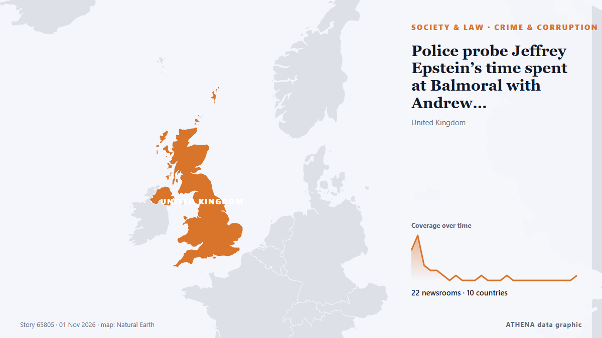

Crime et corruption
| 19 oct. | 0 |
|---|---|
| 20 oct. | 0 |
| 21 oct. | 0 |
| 22 oct. | 1 |
| 23 oct. | 1 |
| 24 oct. | 1 |
| 25 oct. | 0 |
| 26 oct. | 1 |
| 27 oct. | 3 |
| 28 oct. | 1 |
| 29 oct. | 7 |
| 30 oct. | 6 |
| 31 oct. | 1 |
| 1 nov. | 2 |
Les titres sont affichés en anglais, tels que publiés.

Police probe Jeffrey Epstein’s time spent at Balmoral with Andrew Mountbatten-Windsor
Scottish police are investigating the time convicted sex offender Jeffrey Epstein spent with Andrew Mountbatten-Windsor at Balmoral, a private royal estate in Scotland which is a favored retreat for… de Egypt Independent
8-month pregnant Bengal woman delivers stillborn after assault by 'BJP workers'
In Cooch Behar district, a woman named Priya Pal lost her baby after an assault on her husband. de Times of India
New York state police to take over sexual assault complaints at Cornell University
New York state police will take over future sexual assault investigations at Cornell University, Governor Kathy Hochul said… de BusinessWorld
Man, 39, charged with murder of man in Mallow
A 39-year old man has been charged with the murder of Paul O'Connor in Mallow almost a fortnight ago. de RTÉ News
New Zealand police seize 250 kg of cocaine
As a result of successful international police cooperation and the timely exchange of operational intelligence by the Public Security Bureau of the Ministry of Interior, 68 kilograms of cocaine were… de Republika (English)
Police tracking down suspects in shooting incident in Sitiawan
IPOH: Police are tracking down suspects involved in a shooting incident in which several shots were fired at a BMW in front of a house in Taman Hijau, Kampung Koh, near Sitiawan, yesterday. de New Straits Times
IGP Special Operations Team arrests 192 suspects in nationwide anti-crime operations
The Ghana Police Service's IGP Special Operations Team has arrested 192 suspects during a series of intelligence-led operations across parts of the country, recovering suspected narcotic drugs… de MyJoyOnline
El Salvador frees ex-President Saca after 10-year corruption sentence
SAN SALVADOR, Oct 29 - Elias Antonio \"Tony\" Saca, a former Salvadoran president imprisoned for corruption, was released on Thursday, his lawyer said, standing alongside the politician as they… de The Straits Times
Plaka Explosion: Three Suspects Linked to 80 Police Cases
Three men arrested over the Plaka explosion that killed six people are linked to nearly 80 previous police cases, according to Greek reports. de Greek City Times
Accountant’s employee loses €6,000 in online scam
An employee for an accountant’s office in Paphos lost €6,000 when she received an email, appearing to be from a bank, asking her to update her personal details. de Cyprus Mail
This mayor crusaded against cartels in Mexico. Now his assassination haunts his city
Mayor Grecia Quiroz navigates the streets of Uruapan with heavy security, nearly a year after her partner, Carlos Manzo, was assassinated. de ABC News (International)
French presidential hopeful Édouard Philippe quizzed in embezzlement case
French investigators on Thursday questioned former prime minister Édouard Philippe, a candidate in next year's presidential election, in a case of alleged embezzlement of public funds. de France 24 English
Ex-FBI officials charged with lying to Congress about Hunter Biden probe
Two former FBI officials are facing charges for lying to Congress about their involvement in the agency’s investigation into Hunter Biden’s laptop. de The Hill
Cartel roadblocks paralyze Matamoros after arrest of Gulf Cartel leader’s son
The security incident triggered the temporary closure of the international bridges between Brownsville, Texas, and Matamoros. de Mexico News Daily
Murder trial hears wife prayed over husband (80) after finding him bleeding and unresponsive next to shed
Sean Harding (32) denies intending to kill Teddy Murnane during attempted burglary. de Irish Independent
Costa Rica Fires Minister Over Pacific Pact
President Laura Fernández dismissed Trade Minister Indiana Trejos and shelved the 12-nation Trans-Pacific pact Costa Rica planned to sign in November. de The Rio Times
Man charged with fraud over Bondi Beach shooting claim
Detectives identified a 46-year-old man suspected of falsely claiming he was injured in the Bondi shooting and subsequently making fraudulent compensation claims. de Free Malaysia Today
Egyptian man who fire-bombed pro-Israel rally in Colorado pleads guilty to federal hate crimes
DENVER, Oct 29 - The man who lobbed gasoline bombs at a pro-Israel rally in Colorado last year, injuring several people including a woman who later died, pleaded guilty on Thursday to federal… de The Straits Times
Iran dismantles 4 terrorist cells, arrests 16
Iran claimed that some of the 16 people it had arrested had entered Iran from abroad. de Al-Monitor